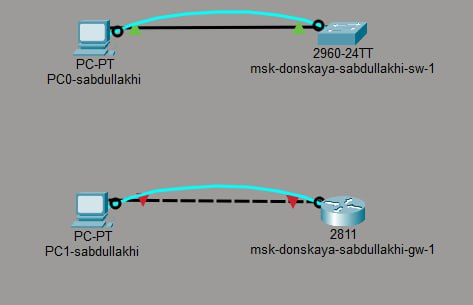
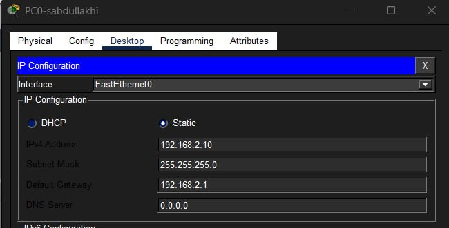
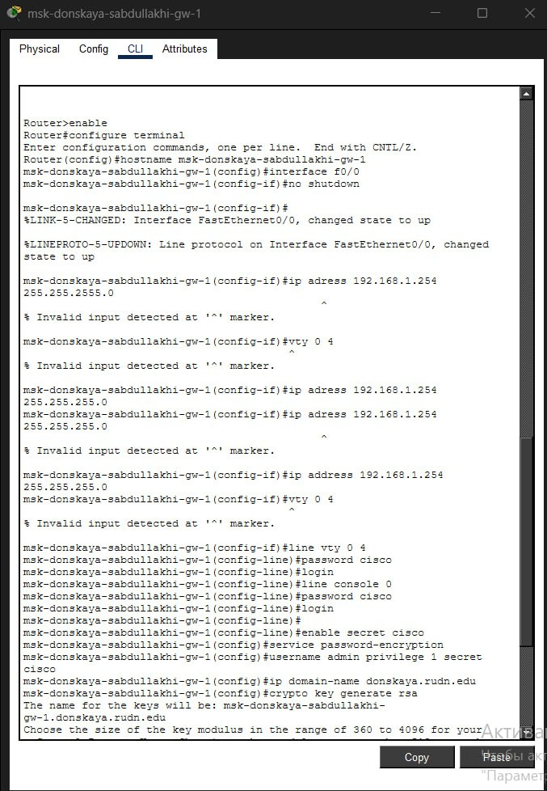
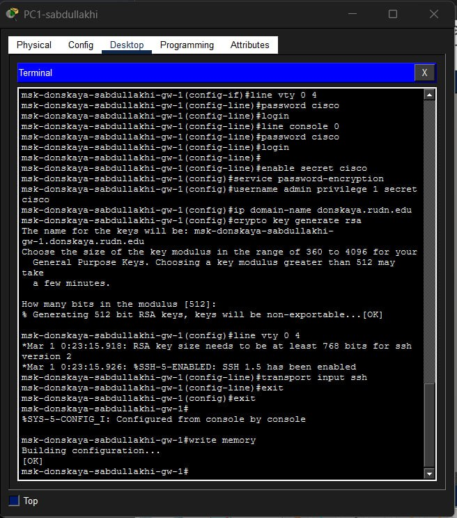
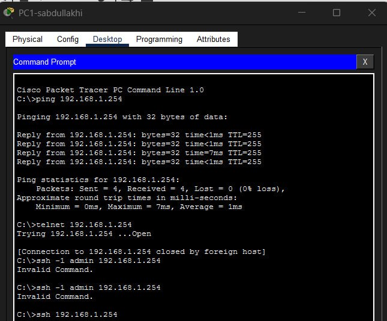
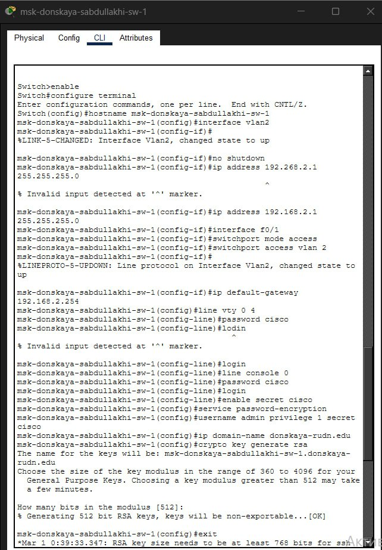
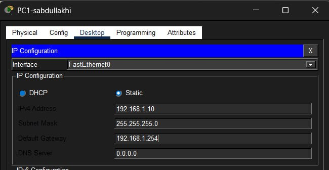
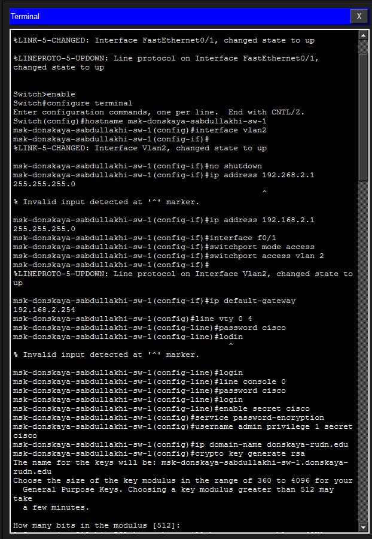
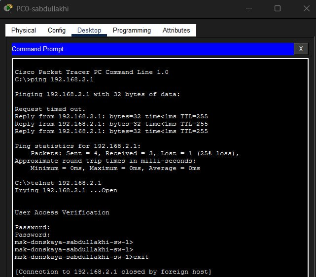

Цель работы — изучить основы конфигурирования маршрутизатора и коммутатора, назначение IP-адресов и настройку удалённого доступа к оборудованию.
На слайде представлена собранная топология сети, включающая маршрутизатор, коммутатор и два персональных компьютера, соединённые между собой.

На маршрутизаторе был настроен сетевой интерфейс, задан IP-адрес, включён порт и настроены параметры безопасности доступа.

Настройка выполнялась через консольное подключение с компьютера, что позволяет выполнить первичную конфигурацию устройства.

Была выполнена проверка соединения с помощью команды ping и выполнено удалённое подключение по SSH.


На коммутаторе был создан интерфейс VLAN, назначен IP-адрес управления и настроены параметры доступа.

На компьютере PC1 был настроен IP-адрес для сети коммутатора, что обеспечило сетевое взаимодействие устройств.

Первичная конфигурация коммутатора выполнялась через консольное подключение с персонального компьютера.

Была проверена доступность коммутатора с помощью ping и выполнено подключение по SSH.

В ходе лабораторной работы была собрана простая сеть и выполнена базовая настройка сетевых устройств Cisco.
Были назначены IP-адреса, настроены VLAN, пароли доступа и удалённое управление по SSH.
Проверка соединения показала корректную работу сети. Таким образом, цель лабораторной работы была полностью достигнута.